Criando aplicações desktop com
PHP-GTK
Por Victor Feitoza
- Desenvolvedor web
- NOC AS 263025 - ISPTEC
- Apaixonado por Linux
<?php
$contacts = array(
'name' => 'Victor Feitoza',
'mail/talk' => 'vfeitoza@gmail.com',
'twitter' => '@vfeitoza',
'phone' => '(83) 9144-2654'
);
var_dump($contacts);
Objetivos
- Visão geral
- Origens
- Estrutura
- Pequenos exemplos
PHP - Visão geral
- Uma das linguagens mais utilizadas na web
- Extremamente fácil de aprender
- Sintaxe parecida com C, Shell, Perl e Java
- Integração com os principais SGDB's existentes
- Grande banco de bibliotecas, classes e funções
- Rápida, flexível, robusta
- Maioria de quem trabalha não usa OO
GTK - Visão geral
- Multi-plataforma para aplicações gráficas
- Suporte a diversas linguagens para melhor desenvolvimento
- Documentação vasta
- Ferramenta para construção de interfaces
- Baseado em widgets e sinais

Adianti - Visão geral
- Primeiro framework com toolkits web e GTK
- Ambiente de desenvolvimento próprio
- Focado em aplicações de negócios
- Uso intensivo de tratamento de exceções
- Bibliotecas de widgets baseadas em componentes
- 100% orientado a objetos
Breve histórico
- PHP-GTK é uma extensão do PHP
- Criado por Andrei Zmievski
- Nasceu como um experimento
- Primeira versão do PHP-GTK em março de 2001
- Adianti lançado final de 2012 por Pablo Dall'Oglio
Arquitetura do Framework
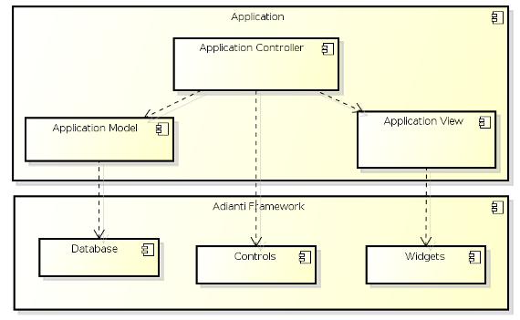
Fluxo de execução
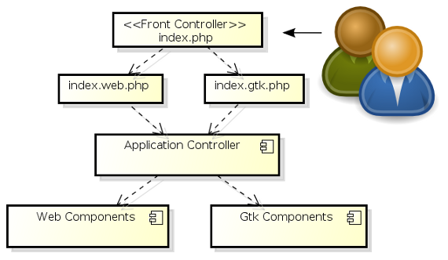
Estrutura das bibliotecas
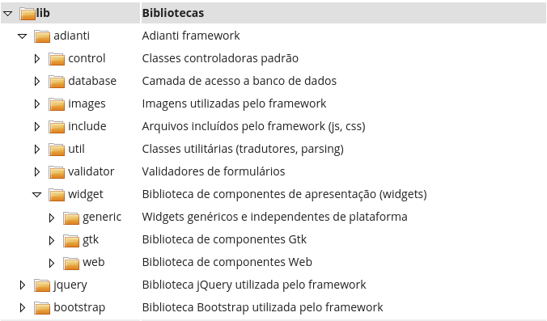
Estrutura do aplicativo
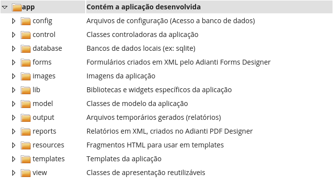
Exemplos
Códigos baseados em componentes
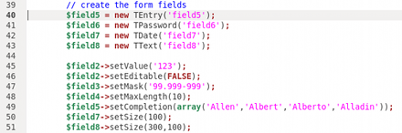
Exemplos
Diversividade de componentes
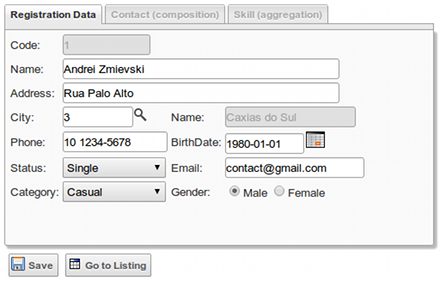
Exemplos
Pensando em sistemas
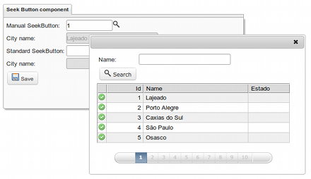
Conta de energia - Classe
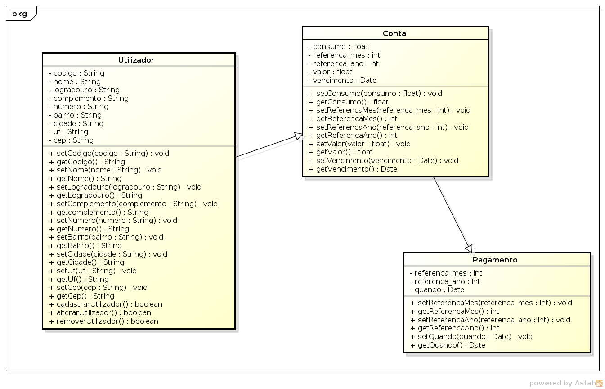
Conta de energia - ER
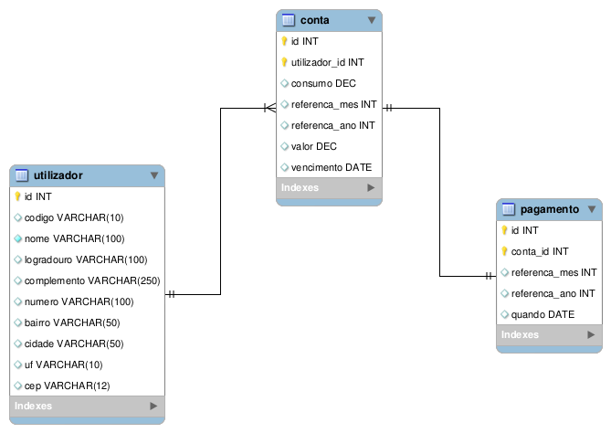
Conta de energia
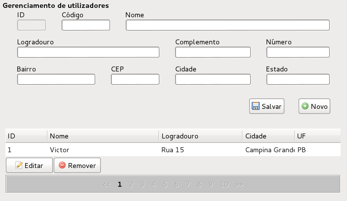
Conta de energia
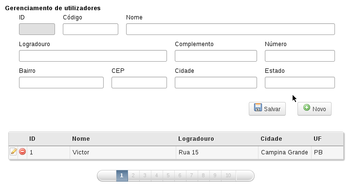
Conta de energia
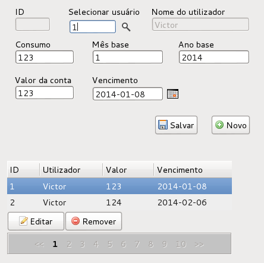
Conta de energia
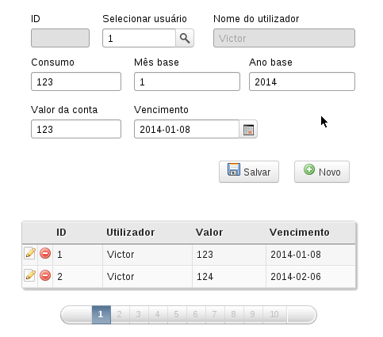